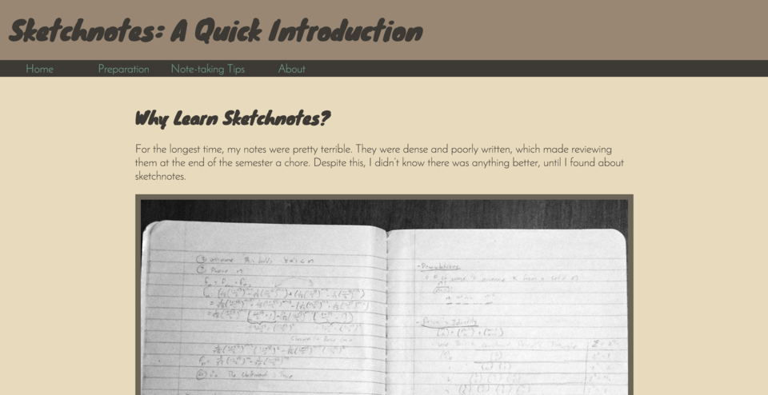
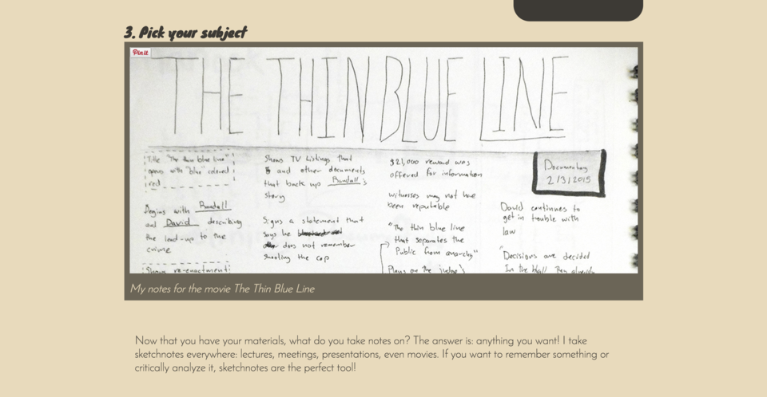

Sketchnotes Tutorial
I use sketchnotes for all of my classes. They're a lot of fun to make and the experience is a lot more engaging than regular note-taking. I decided to use this as a the topic of a tutorial site I made as part of a class assignment.
The site uses only HTML and CSS. My goal when making this site was to make the structure as legible as possible. I tried to avoid using generic elements like divs, when possible in favor of semantic HTML5 tags. I also tried to avoid presentation hacks that would make the order of content in the document different than the order it was presented in. I initially had the asides appear first in the section, but I focused on finding a CSS solution that would allow me to put them last.
Since it was a basic site, I made use of a simple responsive design. Most content scales with the screen up to 960 pixels. Sidenotes are floated next to the main content and have rounded edges, but lose this when the screen reaches below 768 pixels. The navigation also switches from a horizontal layout to a vertical layout at this point.
  back to projects